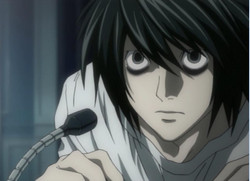
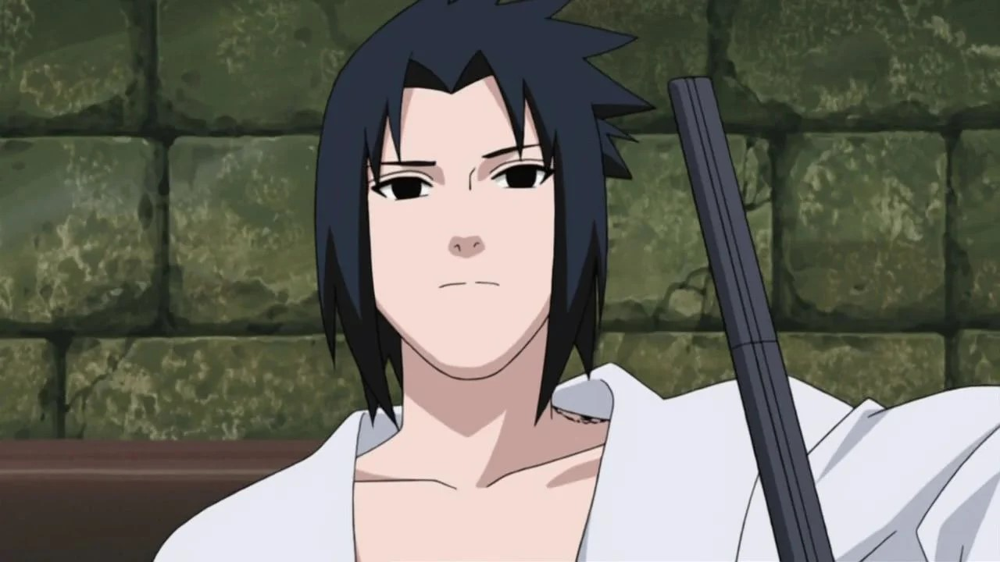

Para Início de Conversa, o que é um Antagonista?
Um antagonista é qualquer personagem, força ou entidade que se opõe ao protagonista em uma narrativa, criando conflito e desafios. No entanto, nem todo antagonista é um vilão. Um antagonista que não é vilão pode agir de maneira moralmente neutra ou até positiva, mas seu objetivo, comportamento ou perspectiva entra em conflito com o do protagonista.
O antagonista pode acreditar sinceramente que está fazendo o que é certo ou necessário. O antagonista não precisa agir por crueldade, egoísmo ou desejo de prejudicar os outros. Ele pode simplesmente discordar do protagonista em relação ao caminho a seguir ou à solução para um problema.
Pode haver um choque entre o código moral ou os métodos do protagonista e do antagonista, sem que um deles seja inerentemente "maligno". Aqui vão alguns exêmplos de tipos de antagonistas:
- Rivalidade Ética
- Rivalidade Pessoal 
- Antagonistas Circunstanciais
- Forças Naturais ou Sistêmicas
Um policial que tenta capturar um protagonista que comete crimes, mas que age por uma causa maior. Exemplo: Javert em Os Miseráveis, que persegue Jean Valjean de acordo com sua interpretação rigorosa da lei.
Um personagem que compete com o protagonista em um contexto esportivo ou acadêmico, sem intenções malignas.
Um líder de uma facção oposta que luta pelos interesses de seu grupo, que entram em conflito com os do protagonista, mas não é inerentemente mal.
O antagonista pode ser um sistema social, político ou uma circunstância (ex.: burocracia, pobreza, desastre natural) que desafia o protagonista.